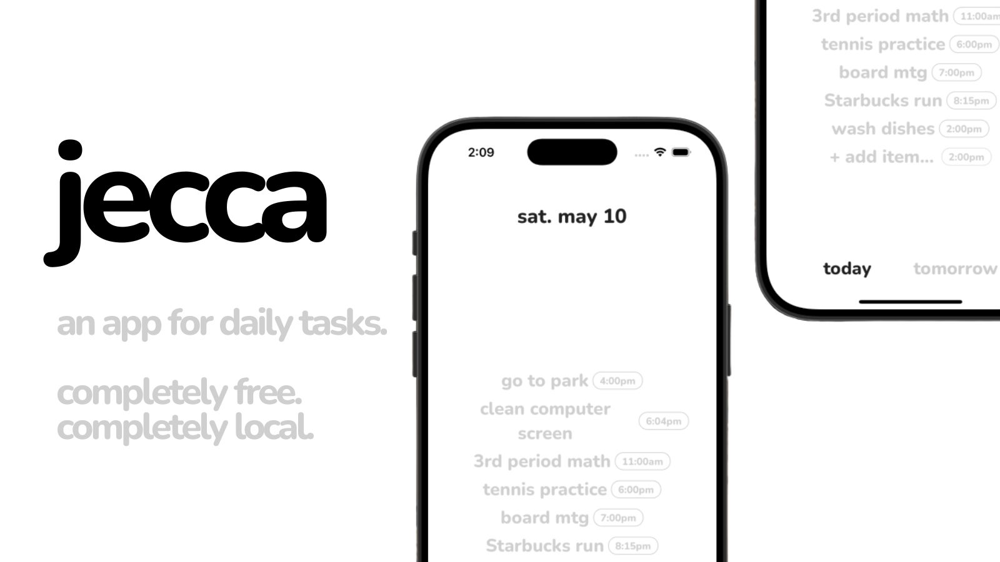

introducing jecca
jecca is a lightweight daily task app built for people who want simplicity, clarity, and focus.
- 🗓️ Daily Reset: Tasks reset every day at midnight — so you always start fresh.
- ☁️ Cloud Sync: Tasks are securely synced to our server throughout the day for backup and reminders, then deleted after the day ends.
- ⚡ Instant Task Input: Add a task in one tap — no accounts, no friction.
- 🔔 Smart Reminders: Timely nudges help you finish what matters, without being annoying.
- 💡 Daily Focus Mode: One screen. One list. Just today’s tasks.
- 🙈 No Long-Term Storage: Your tasks disappear after 24 hours — we don’t save your data.
- 📱 Minimalist UI: No clutter, no settings pages, no endless tabs — just what you need.
jecca helps you get through today. That’s it — and that’s the point.